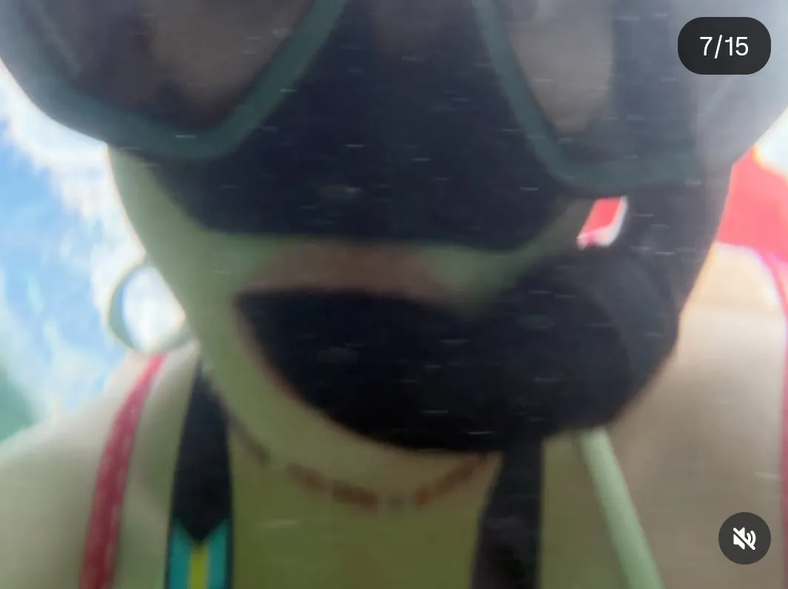
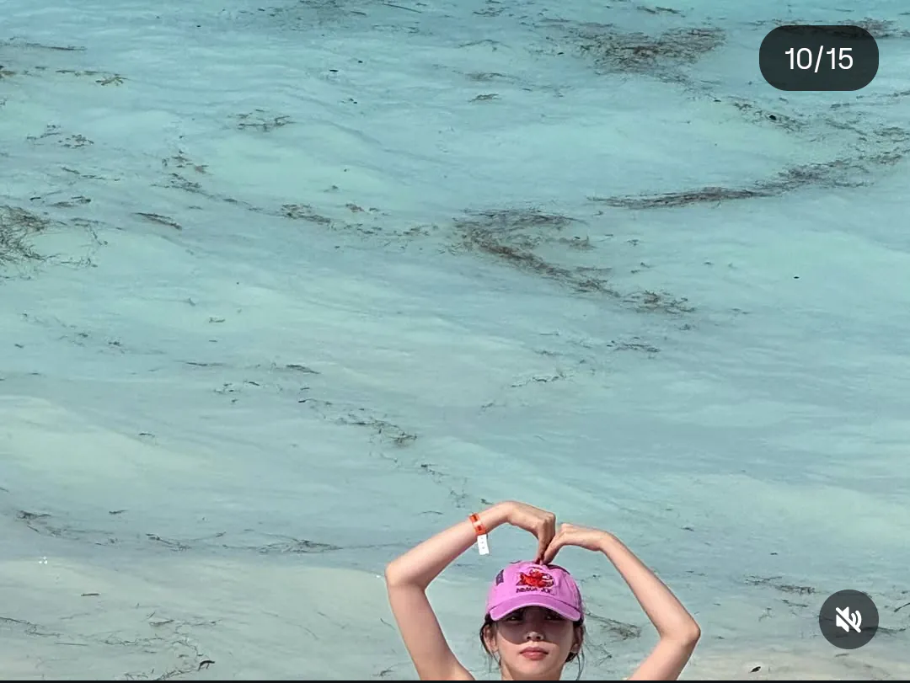
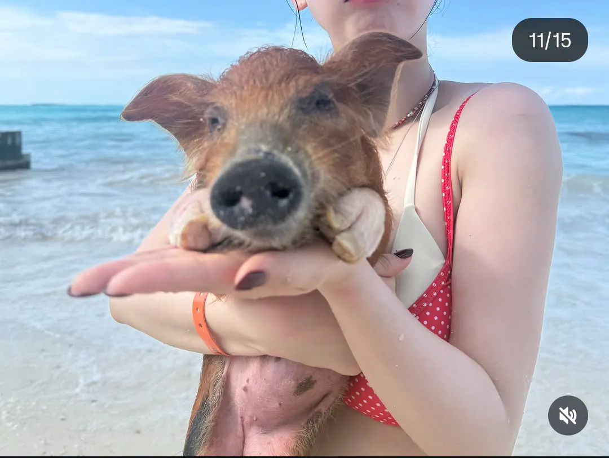

시발!!
근데 5짤 돼지새기 존나 귀여움 ㅋㅋㅋㅌ
??? : 기싸움하네?
뉴프로비던스 섬(New Providence) 근처의 Rose Island(로즈 아일랜드) 동쪽 해안에 있는 프라이빗 비치클럽이야.
넌 뜨지마라
ㅋㅋㅋㅋㅋㅋㅋㅋ
돼지 사람 시체도 먹는다는데 진짜야
뭔 물안경이 얼굴 반을 가렸네. 저게 원래 저런 거야? 난 저 비슷한 수경 샀더니 코 고무로 가리는 부분이 짦아서 닿던데...;
3짤 진짜 존나 이쁘네